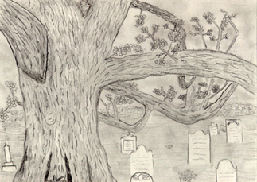

Student Project
Marisa

I feel as though there is nowhere else on earth.
Like it is just me standing here with nothing else.
But inside I feel very peaceful
-Marisa
c. Marisa
Grade 10
Gill St. Bernard's School
Gladstone, New Jersey USA
Pencil on Paper 9 "X12"
White Oak
Latin Name: Quercus
Age: 600 years
Circumference: 20 feet at 54 inches from the base
Location: Basking Ridge, New Jersey
 Return to Main Page
Return to Main Page
June Julian jj68@nyu.edu